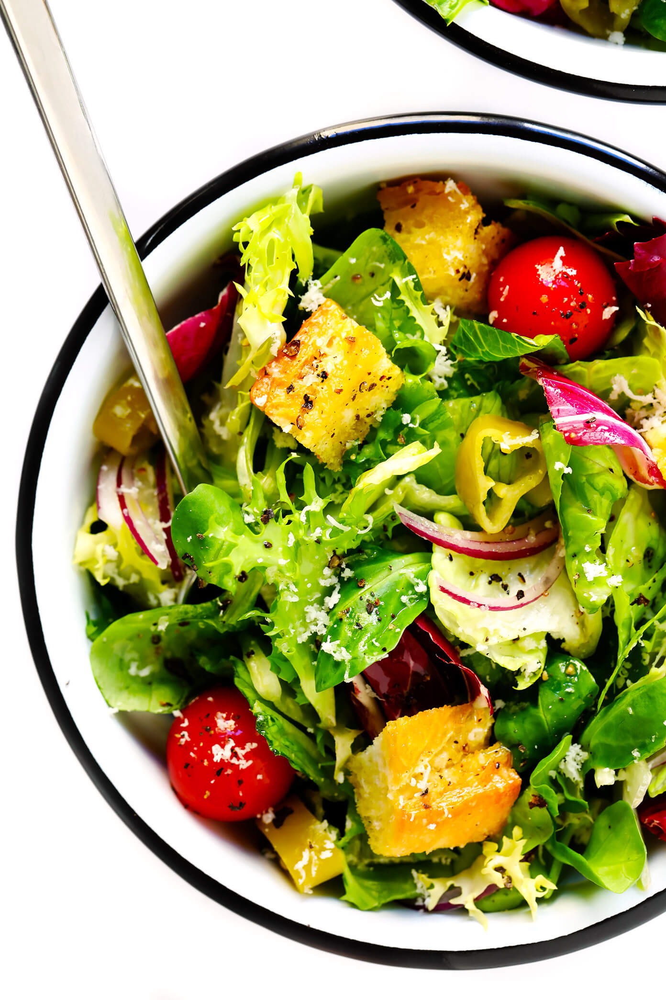

Featured Works


The greatest aspect of Italian food is its bold flavor combinations. Fresh ingredients such as tomatoes, garlic, onions, basil, oregano, rosemary, and olive oil are common in classic Italian dishes.
These are all authentic Italian cooking staples and blend perfectly to create flavorful dishes packed with depth and complexity. There's no denying the powerful impact of these iconic ingredients on modern-day Italian cuisine.
Cotoletta alla Milanese certainly looks like a Wiener Schnitzel; in fact, the two dishes possibly stem from the same French preparation from the mid-1700s.
Baccalà is the name given to cod that has been salted and dried, a common practice in Italy that dates back to a time when the fish was especially abundant.
Whereas spaghetti and meatballs as a dish is purely an Italian-American creation, ragù alla Bolognese is perhaps the original source of inspiration.
Cacio e pepe is the proof that you can do very much with very little. Two of the three ingredients are displayed in the name
This classic specialty from Piedmont incorporates basic ingredients to make a delightful dish traditionally enjoyed by large groups of farmers
If you've collapsed it into the pizza category in your mind, it's time you placed it into a realm of its own.
In a restaurant, the menu is a list of food and beverages offered to customers and the prices. A menu may be à la carte which presents a list of options from which customers choose – or table d'hôte, in which case a pre-established sequence of courses is offered.
The cutlet you begin with should be at least the size of a large hand. The cotoletta (or Costoletta) alla Milanese is a thin, delicate veal cutlet dipped in egg and breadcrumbs and sautéed in butter. Risotto alla Milanese is a classic dish from the Lombardy region of northern Italy
Baccalà is the name for cod that has been cured, or preserved, with salt. The resulting fish is pleasantly flaky in texture with an irresistibly intense and unusual—but never fishy—flavor. In Italy, baccalà is a celebrated fish and a fish for celebrations.
Ragù Bolognese is a beautiful, slow-cooked meat sauce made from ground beef and/or pork, chopped carrots, onion, celery, milk, wine, tomato paste and stock. Bolognese sauce is a classic Italian sauce for pasta made with ground meat such as beef or pork. It's slow cooked with a soffritto of onions, carrots, and celery, tomatoes, and milk.
An iconic dish of the 'Eternal City' Roma, cacio e pepe or pasta de pepe simply translates to cheese and pepper pasta. Pasta: Tonnarelli is the traditional pasta for Cacio de Pepe but you may use easier to find spaghetti or bucatini.Heat olive oil in a large skillet over medium heat. Cook and stir garlic and pepper in hot oil until fragrant, 1 to 2 minutes.
Bagna càuda (Piedmontese: meaning "hot dip", "hot gravy") is a hot dish made from garlic and anchovies, originating in Provence, France and popular in Piedmont, Italy, since the 16th century.
The name focaccia derives from the Roman “panis focacius,” meaning “hearth bread”, referring to the fact that focaccia was traditionally baked in coals in Roman times. Its recipe back then consisted of rough flour, olive oil, water, a very small quantity of yeast, and salt, and was probably quite plain.
070*******
Azerbaijan 100, baku
rest@gmail.com
Restaurant blogs are more than just for sharing cooking tips and recipes—they're the perfect source for marketing ideas, tips for restaurant operations, restaurant management system sharing, team building, and much more.
A food blog is a journal-type website that allows the writer to document anything food related. Some examples of topics a food blogger can choose to write about are recipes, restaurant reviews, food traveling, and stories about family food history or memories pertaining to food.